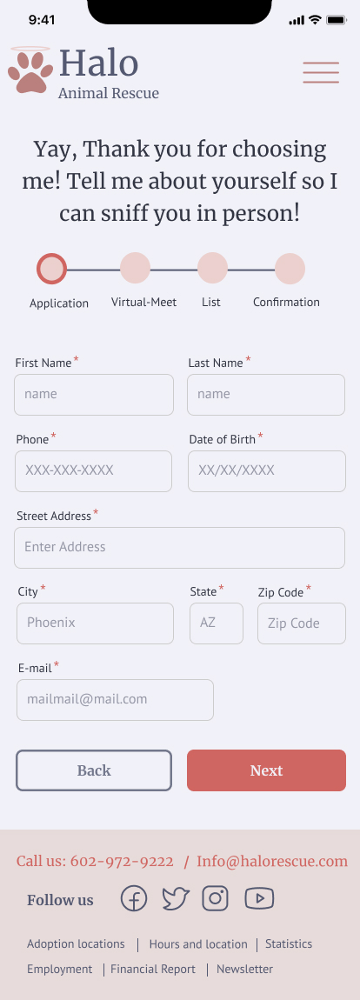

Halo Rescue
A local animal rescue non-profit located in Phoenix,AZ. A no-kill facility that helps thousands of dogs and cats find their new home.
Responsive Web Design | Surveys | Persona | User Flow | User Interface | Prototyping
Project Overview
Redesign a website for a local non-profit that is responsive to allow users to easily access it on a phone screen.
Roles/Team
UX Researchers and UI Designers
Charlotte Kane
Sirine Khaled
The Problem
When we evaluated the current state of the rescue’s website, we found that the pets listed were not organized, and lacked quality & equally sized pictures. The color palette included varying primary colors with a lot of available white space on the homepage.
The Solution
A responsive design with well matched color palette, that allows pets to be the main focus of the website, along with organized information.
Research
The first step was to create a proto-persona to execute the interview plan and publish a survey. Around 4 user interviews were done, and 20+ survey particpants responded to varying questions about their own adoption experiences. . In the meantime, a heuristic evaulation was conducted of the current website that could be included in the redeisgn process.
“We wish we had a form built into the website to submit the applications. Right now we do everything by appt only and they have to copy & paste the application into an email.”
-Stakeholder
Analysis and Ideation
With meaningful insights from our stakeholder and participants, it was time to start prioritizing what actually would be most beneficial for everyone involved, and making sure these pets find a home as a result of it.
Online application, virtual meet and greet and pet owner's checklist were some that topped our priority list to not only visually redesign the website, but to leverage it as a way to create an efficient process for future pet owners to find their new fluffy companion.
Prototype
I looked at a lot of different pet related websites redesign projects, as well as other sites in general to find UI elements that would help users feel informed about what the adoption process is like and how long it would take to fill out the application. Alongside, we drew some sketches with our own elements and incorporated some designs I found while gathering inspiration as well. First, we started by roughly designing a desktop wireframe to agree upon a layout and started building components for it.
It was very important to make sure the pets were the highlight of the website. After all it is a non-profit rescue website whose goal is to make sure each pet finds a home. So I created a card design that would give users a quick glance at the pet and some basic information about it.
A wizard was created so users knew where they were at with the online application process.
Style Guide and Components
Fom the gathered insipiration, we a created color palette by adding our own additions that fit best. Also, tested with different fonts and finalized two typaces.
User Testing
Confirmation page needs closure
Additional screening questions are needed on the application form
Rename some “Next” buttons

